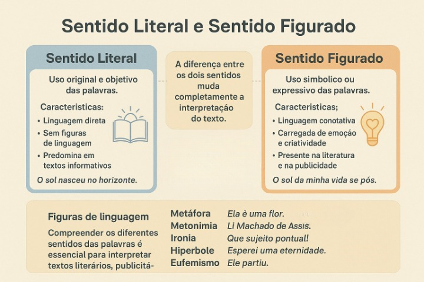

Sentido Literal e Sentido Figurado: Mecanismos Semânticos, Figuras de Linguagem e Expressividade
A linguagem humana possui a extraordinária plasticidade de transitar entre a exatidão descritiva do mundo factual e a invenção poética de realidades subjetivas. No cerne da Semântica e da Estilística da Língua Portuguesa, essa versatilidade manifesta-se no contraste complementar entre o sentido literal e o sentido figurado. Longe de ser uma mera distinção teórica restrita à análise de poemas, esse binômio governa a maneira como decodificamos manchetes de jornais, interpretamos campanhas publicitárias, compreendemos o humor dos memes digitais e participamos das conversações cotidianas.
Enquanto o sentido literal apoia-se na estabilidade do código convencionalizado (o significado de base dicionarizado e referencial), o sentido figurado opera por meio de transferências conceituais, desvios deliberados e projeções imagéticas. Como demonstraram George Lakoff e Mark Johnson (2002) em suas pesquisas seminais sobre a metáfora conceitual, a linguagem figurada não é um enfeite superficial ou periférico da fala; ela reflete a própria estrutura do pensamento e da cognição humana, permitindo compreender domínios abstratos por meio de experiências físicas e sensoriais.
Neste artigo fundamentado nas ciências da linguagem, examinaremos os fundamentos do sentido próprio e do sentido translato, a mecânica das principais figuras de linguagem (tropos), a funcionalidade do figurado na literatura e na publicidade, uma proposta de sequência didática e um roteiro analítico para a sala de aula.

Sentido literal versus sentido figurado: delimitação conceitual
Para interpretar qualquer texto com rigor crítico, é necessário distinguir o modo de operação de cada uma dessas modalidades de significação:
Sentido Literal (Sentido Próprio / Denotativo)
Ocorre quando os signos linguísticos são empregados em sua significação primordial, unívoca e convencionalizada pela comunidade linguística.
Orientação: Aponta diretamente para o referente no mundo real, prezando pela clareza, previsibilidade e exatidão factual.
Esferas de prestígio: Discurso científico, jornalismo factual, textos jurídicos, manuais técnicos e verbetes enciclopédicos.
Exemplo: “O sol nasceu no horizonte às seis horas da manhã.” (astro luminoso no céu astronômico).
Sentido Figurado (Sentido Translato / Conotativo)
Emerge quando as palavras sofrem um deslocamento semântico intencional, adquirindo novos valores expressivos, poéticos, afetivos ou ideológicos.
Orientação: Exige que o interlocutor ative inferências e analogias para reconstruir o sentido pretendido pelo enunciador.
Esferas de prestígio: Literatura, publicidade, crônicas de opinião, charges, canções e comunicação coloquial.
Exemplo: “Aquele filho dedicado foi o sol da minha velhice.” (fonte de alegria, amparo e vitalidade existencial).
A metáfora como mecanismo do pensamento
Para Paul Ricoeur (2000), a metáfora viva não é uma mera troca ornamental de palavras, mas uma inovação semântica que cria um "conflito interpretativo". Ao confrontar o sentido literal incompatível (um ser humano não é uma esfera de plasma gasoso como o sol), o cérebro é forçado a transcender a literalidade e apreender uma verdade de ordem superior: o calor humano, a centralidade e a luminosidade que uma pessoa representa para a outra.
As figuras de linguagem: arquitetura do sentido figurado
O sentido figurado organiza-se através das figuras de palavras e de pensamento (tropos), recursos estilísticos que flexionam o significado lexical e enriquecem o discurso. Entre as mais recorrentes nos exames vestibulares e na comunicação social, destacam-se:
| Figura de Linguagem | Operação Semântica Realizada | Exemplo Comentado | Efeito de Sentido no Texto |
|---|---|---|---|
| Metáfora | Transferência de significado fundada em uma analogia ou semelhança implícita entre domínios distintos (sem o conectivo "como"). | "Aquele debatedor é uma muralha intransponível." | Atribui firmeza inabalável e resistência estoica à argumentação do debatedor. |
| Metonímia | Substituição de um termo por outro com base em uma relação real de contiguidade material, causal ou espacial (o autor pela obra, o continente pelo conteúdo). | "O estudante devorou Machado de Assis no fim de semana." / "O atleta bebeu três taças inteiras." | Agiliza a linguagem ao trocar a obra pelos livros do autor, ou o líquido pelo recipiente que o contém. |
| Personificação (Prosopopeia) | Atribuição de sentimentos, atitudes e comportamentos humanos a seres inanimados, animais ou conceitos abstratos. | "A cidade agonizava sob a tempestade implacável." | Humaniza o espaço urbano, criando uma atmosfera dramática de sofrimento coletivo. |
| Hipérbole | Exagero deliberado e desmedido na declaração para enfatizar uma impressão emocional ou dimensão factual. | "Esperei uma eternidade na fila daquele banco." | Intensifica a denúncia da demora e a sensação de cansaço exaustivo do usuário. |
| Eufemismo | Suavização intencional de uma notícia dolorosa, chocante, mórbida ou socialmente inconveniente. | "O paciente descansou em paz após longa enfermidade." | Atenua a brutalidade biológica da morte física, demonstrando respeito ou solidariedade. |
| Ironia | Afirmação literal de uma proposição com a intenção pragmática evidente de comunicar exatamente o oposto. | "Que sujeito pontual!" (ao ver alguém entrar com duas horas de atraso). | Produz efeito de crítica, censura moral ou humor mordaz mediante quebra contextual. |
A metáfora lexicalizada (Catacrese)
Quando uma figura de linguagem se repete por séculos na boca do povo e a língua carece de um termo técnico específico para nomear determinado elemento, o brilho poético original da metáfora desaparece, transformando-se em catacrese. Exemplos clássicos como "embarcar no avião" (embarcar derivou de barca), "braço do rio", "pé da montanha" e "cabeça de prego" tornaram-se tão estáveis que são processados funcionalmente como se fossem quase literais.
O sentido figurado em ação: estética literária versus persuasão publicitária
A utilização da linguagem figurada cumpre finalidades radicalmente distintas a depender do campo social em que circula:
1. Na Literatura: a experiência estética e polifônica
No texto literário e poético, o sentido figurado não é um mero recurso acessório; ele é a própria essência da arte da palavra. Ao romper com a previsibilidade do dicionário, o escritor constrói uma teia polifônica de múltiplos sentidos que desestabiliza as certezas do leitor, despertando reflexões existenciais e provocando estranhamento artístico (o desfamiliarização formalista).
2. Na Publicidade e no Marketing: a sedução e o branding emocional
No discurso mercadológico, o sentido figurado atua como uma alavanca psicológica de persuasão. As marcas associam seus produtos tangíveis (refrigerantes, veículos, cartões bancários) a conceitos existenciais intangíveis (felicidade, liberdade, empoderamento, segurança).
- "Abra a felicidade" (Coca-Cola): projeta na ação física de abrir uma garrafa de refrigerante a promessa emocional de comunhão e alegria;
- "O futuro é feito de escolhas" (Bradesco): personifica o "futuro" como uma matéria moldável pela tomada de crédito e planejamento financeiro;
- "Red Bull te dá asas": metáfora hiperbólica que promete vitalidade psicofísica extraordinária ao consumidor.
Aplicação pedagógica: investigando a linguagem figurada no ecossistema digital
Sequência Didática: O Sentido Figurado nas Redes Sociais
Para que a sala de aula se conecte às práticas leitoras contemporâneas, o professor pode propor uma oficina de desconstrução semiótica em três etapas:
- Análise de Memes Multimodais: Selecionar memes que exploram a tensão entre o literal e o figurado (por exemplo, a imagem de alguém "quebrando a cabeça" diante de uma equação matemática com a representação gráfica de um crânio rachando), demonstrando como a quebra visual da metáfora gera o efeito cômico;
- Rastreamento de Canções Populares: Analisar letras do cancioneiro nacional (da MPB ao rap contemporâneo), mapeando como figuras como a antítese e a metáfora expressam dilemas afetivos, desigualdades sociais e resistências históricas;
- Exercício de Reescrita Inversa: Solicitar que os estudantes convertam uma crônica poética em um boletim de ocorrência policial estritamente literal, observando a perda radical de emoção e subjetividade provocada pela expurgação do sentido figurado.
Esquema pedagógico: o itinerário da leitura literal à interpretação figurada
O percurso da compreensão do sentido
Decodificação lexical denotativa (leitura literal de base) → Detecção de conflito semântico (a literalidade faz sentido no contexto?) → Identificação do tropo estruturante (é metáfora, metonímia, ironia ou hipérbole?) → Ativação da bagagem enciclopédica (quais analogias culturais estão em jogo?) → Apreensão do sentido figurado (reconstrução da intenção estética ou persuasiva).
Questões para estudo e reflexão
Questão 1
Qual é a diferença fundamental entre sentido literal e sentido figurado na análise de um enunciado?
Ver resposta comentada
Resposta comentada: O sentido literal corresponde ao significado convencional, objetivo e referencial das palavras, exatamente como registrado em suas definições primárias nos dicionários, visando à correspondência com o mundo factual. O sentido figurado resulta do emprego criativo, metafórico ou simbólico dos signos, transferindo significados entre diferentes campos conceituais para gerar expressividade, reflexão estética ou comoção emocional.
Questão 2
Como a teoria da metáfora conceitual de Lakoff e Johnson alterou a compreensão tradicional sobre as figuras de linguagem?
Ver resposta comentada
Resposta comentada: Lakoff e Johnson demonstraram que a metáfora não é um mero enfeite linguístico de poetas e oradores, mas um mecanismo cognitivo profundo que estrutura o próprio modo como a mente humana compreende o mundo. Concebemos ideias abstratas (como o tempo, o amor e o debate) a partir de metáforas vivas ancoradas no corpo físico (ex.: "O tempo é dinheiro" — nós poupamos, gastamos e desperdiçamos tempo).
Questão 3
Qual é o mecanismo semântico que diferencia a metáfora da metonímia?
Ver resposta comentada
Resposta comentada: A metáfora apoia-se em uma relação de semelhança ou analogia implícita entre domínios conceituais diferentes que não possuem contato direto na realidade (ex.: comparar a firmeza de um caráter a uma rocha). A metonímia apoia-se em uma relação de contiguidade real e dependência material no mesmo universo referencial (ex.: o autor pela obra, o efeito pela causa, o continente pelo conteúdo, como em "beber um copo de água").
Questão 4
Por que a catacrese é considerada uma "metáfora desgastada" ou fossilizada na língua?
Ver resposta comentada
Resposta comentada: Porque a catacrese nasce de uma metáfora criada para suprir a ausência de um vocábulo próprio na língua (como em asa da xícara ou maçã do rosto). Com o passar das gerações e a repetição contínua, os falantes deixam de perceber o vínculo figurativo original, passando a usar a expressão de forma automática, como se fosse o nome denotativo real do objeto.
Questão 5
De que maneira os anúncios publicitários utilizam a hipérbole para capturar a atenção do consumidor?
Ver resposta comentada
Resposta comentada: A publicidade utiliza a hipérbole (exagero intencional) para intensificar as qualidades de um produto ou serviço, prometendo resultados extraordinários ou experiências sensoriais incomparáveis (ex.: "o sabor que vai parar o mundo" ou "descontos astronômicos"), mobilizando a imaginação e despertando o desejo imediato de compra.
Resumo sobre sentido literal e sentido figurado
- O sentido literal fundamenta-se na denotação, na objetividade e no significado dicionarizado básico;
- O sentido figurado explora a conotação, as analogias e os efeitos expressivos subjetivos;
- A transição entre o literal e o figurado é orquestrada pelas figuras de linguagem (metáfora, metonímia, hipérbole, eufemismo, ironia);
- A catacrese representa a lexicalização de uma figura pelo desuso de sua imagem original (ex.: embarcar no ônibus);
- Na literatura, a linguagem figurada forja beleza estética, ritmo e profundidade existencial;
- Na publicidade e propaganda, as metáforas constroem laços emocionais e persuasão de consumo;
- Compreender o sentido figurado no cotidiano capacita o leitor a desvendar memes, músicas e sutilezas da comunicação digital.
Perguntas frequentes sobre sentido literal e figurado
O que significa dizer que uma frase está no sentido literal?
Significa que as palavras estão sendo empregadas em seu significado real, direto e exato, sem duplos sentidos, exageros poéticos ou metáforas, exatamente como se lê na definição básica de um dicionário.
O que é o sentido figurado da linguagem?
É o uso expressivo e criativo das palavras, em que elas adquirem novos significados a partir do contexto, simbolismos e associações de ideias, expressando sentimentos e impressões subjetivas.
Qual a diferença entre metáfora e comparação?
A metáfora é uma comparação direta e implícita, sem o uso de conectivos comparativos (ex.: "Aquele homem é um leão"). A comparação é explícita e emprega termos comparativos formais como "como", "tal qual" ou "assim como" (ex.: "Aquele homem luta como um leão").
O que é eufemismo?
É a figura de linguagem utilizada para amenizar ou suavizar uma mensagem desagradável, dolorosa ou rude, como usar "passou desta para melhor" em vez de "morreu".
O que é metonímia?
É a troca de uma palavra por outra quando existe entre elas uma relação de proximidade lógica ou física real, como quando dizemos "ele fumou um havana" (o lugar pelo charuto) ou "bebeu dois copos" (o recipiente pelo líquido).
Por que os memes usam tanto o sentido figurado?
Porque o humor dos memes frequentemente nasce do contraste absurdo entre levar ao pé da letra uma expressão que era para ser entendida em sentido figurado, revelando a graça da polissemia cotidiana.
Textos de redação do ENEM podem ter sentido figurado?
O gênero dissertativo-argumentativo exige clareza e formalidade prioritariamente denotativas. Figuras pontuais e maduras são permitidas, mas o excesso de sentido figurado pode comprometer a precisão da tese e penalizar a nota de coesão e clareza.
Como o contexto me ajuda a identificar se o sentido é literal ou figurado?
Analisando a situação de fala, o gênero do texto e as palavras ao redor: se a leitura literal gerar uma impossibilidade física ou uma frase absurda (como "engolir sapos" em uma reunião de negócios), o interlocutor ativa imediatamente a chave de leitura figurada.
Considerações finais
A oscilação constante entre o sentido literal e o sentido figurado espelha a própria vitalidade da língua em sociedade. Se a humanidade se comunicasse exclusivamente por meio de enunciados estritamente literais, a linguagem perderia a sua capacidade de comover, de encantar esteticamente e de condensar vivências subjetivas inexprimíveis em fórmulas matemáticas puras.
Dominar a fronteira entre o factual e o metafórico consolida a maturidade intelectual do estudante, capacitando-o a desconstruir os artifícios de sedução do mercado publicitário, a interpretar com profundidade as grandes obras da literatura lusófona e a produzir enunciados que unem precisão argumentativa e riqueza estilística.
Conteúdos relacionados
- Noções Iniciais de Semântica: o Significado nas Palavras
- Relações Semânticas no Léxico: Conexões de Sentido e Coesão
- Denotação e Conotação: Sentidos Literal e Figurado na Linguagem
- Ambiguidade e Inferência Semântica no Contexto Textual
- Semântica e Pragmática: Significado e Uso da Linguagem
- Campo Semântico e Campo Lexical: Redes e Famílias de Palavras
- Semântica — Índice Completo de Conteúdos
Referências
- GARCIA, Othon Moacyr. Comunicação em prosa moderna: aprenda a escrever, aprendendo a pensar. 27. ed. Rio de Janeiro: Editora FGV, 2010.
- ILARI, Rodolfo; GERALDI, João Wanderley. Semântica. 11. ed. São Paulo: Ática, 2006.
- JAKOBSON, Roman. Linguística e comunicação. Tradução de Izidoro Blikstein e José Paulo Paes. 24. ed. São Paulo: Cultrix, 2010.
- LAKOFF, George; JOHNSON, Mark. Metáforas da vida cotidiana. Tradução coordenada por Mara Sophia Zanotto. Campinas: Mercado de Letras / Educ, 2002.
- RICOEUR, Paul. A metáfora viva. Tradução de Dion Davi Macedo. São Paulo: Loyola, 2000.
- ULLMANN, Stephen. Semântica: uma introdução à ciência do significado. 5. ed. Lisboa: Fundação Calouste Gulbenkian, 1982.
Explore Outros Conteúdos
Continue seus estudos acessando outras seções do site Mestre Kira: